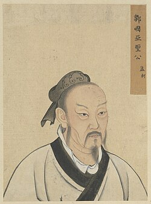

HSK1 · 初级
HSK1 3.0
汉语教程 · 初级
Dành cho lúc mới bắt đầu: học phát âm, từ vựng cơ bản, mẫu câu và hội thoại qua 15 bài.
Danh thắng, danh nhân, thơ cổ, lễ hội, ẩm thực, trang phục… 46 con tem là 46 nét văn hoá Trung Hoa bạn sẽ gặp lại trong từng bài học.
Kéo chuột (hoặc vuốt) sang ngang để xem thêm · Bấm vào tem để xem nghĩa, pinyin và nghe đọcTừ mới, pinyin, ngữ pháp và mẫu câu được gom theo từng bài để học tới đâu dễ nhìn lại tới đó.
Có câu mẫu, hội thoại và phần luyện shadowing để không chỉ nhìn chữ Hán giỏi mà còn nói tiếng Trung xịn.
Trắc nghiệm, sắp xếp câu và game đa dạng giúp các bạn nhà Meow Meow kiểm tra mình đã nhớ bài chưa.

Dành cho lúc mới bắt đầu: học phát âm, từ vựng cơ bản, mẫu câu và hội thoại qua 15 bài.
20 bài trung cấp đi sâu hơn vào từ vựng, ngữ pháp, đọc hiểu và phần vận dụng có Meow Meow chấm bài.
Mở bài học nhanh hơn ngay từ màn hình chính.